An introduction to Italian electrics
While generally similar to other European countries, there are still some important distinctions in the wiring practices found in Italy. This page will try to cover most of these differences, from the "type L" plugs and sockets to the modular electrical accessories and unusual power meters.
Plugs and sockets
There are four different types of plugs in use in Italy: Europlugs and Schuko plugs, also found in the rest of Europe, as well as 10A and 16A Italian plugs. These days, most appliances come with either Europlugs or CEE 7/7 Schuko plugs, with very few exceptions (such as laptop chargers).
The two sizes of Italian plug differ not just in pin thickness (4.0 vs 4.8mm), but also in spacing; this is because, back in the day, they were used for different voltages - 120V for lights and 220V for appliances, which had different power tariffs. This distinction doesn't exist anymore, but the two plug sizes remain.
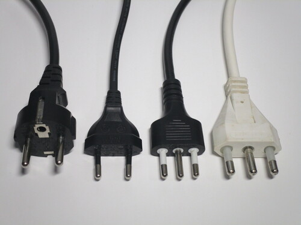 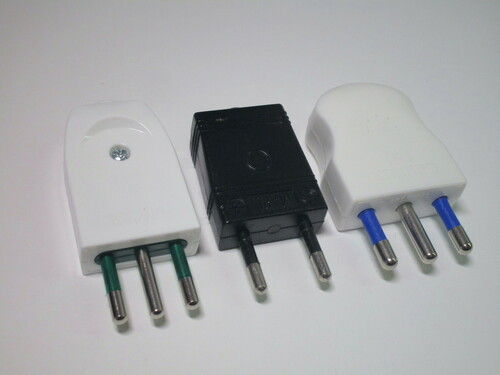 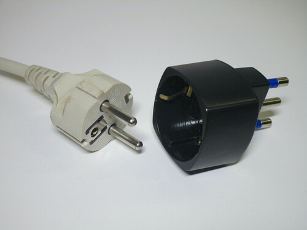{kind=link}
{kind=link}
{kind=link}
The majority of sockets found in homes are of the "Bipasso" type, which accepts both 10A and 16A plugs, as well
as Europlugs. Older 16A sockets, which don't work with 10A plugs, may occasionally be found, though they're quite rare.
10A sockets are also in use, generally alongside a Bipasso one.
Despite the widespread use of Schuko plugs, they cannot fit in Italian sockets, leading many to use adaptors. In more recent installations, however, Schuko-compatible sockets have now become common; these solve the compatibility barrier, as they're designed to fit both Schuko and Italian plugs.
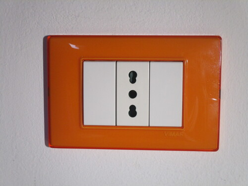 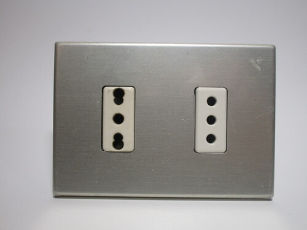 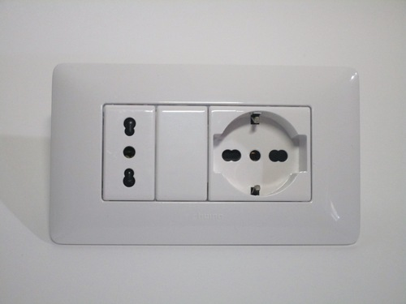{kind=link}
{kind=link}
{kind=link}
Modular electrical accessories
All electrical accessories - that is, sockets, light switches, aerial jacks, etc. - in Italy are modular. This allows for a high degree of flexibility, for example to have a few sockets next to an aerial jack and an Ethernet port, for an AV setup. Modules of all sorts of types are available, including isolator switches, breakers, buzzers and several types of data connections.
Each module clicks into place on a support plate, which can house more or less modules depending on the size of the wall box. A decorative cover plate is then added. It's common practice to leave a few empty spaces (using blank plates), to help with future changes and expansions.
The main disadvantages are increased cost and the incompatibility between different models of modular systems.
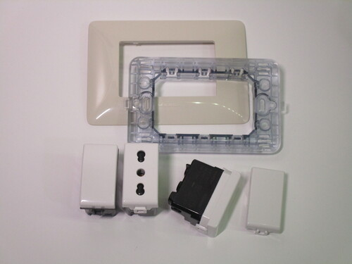{kind=link}

{kind=link}
Breaker and fuse boxes
Until recently, breaker boxes have tended to be small, with few circuits. RCDs are found in every home, as they've been mandatory since 1990 and are legally required in existing installations as well. Because of this requirement, it's very difficult to find old fuse boxes still in use, as most people decided to replace them entirely.
As in the rest of Europe, Italy also uses DIN rail breaker boxes. Busbars to distribute power to multiple breakers aren't common, aside from higher-end installations, instead small jumper wires tend to be used. This is more time-consuming, but likely derives from the era of breakers as separate individual devices. As with France and a few other countries, breakers in Italy always break the neutral, to ensure complete isolation of a circuit.
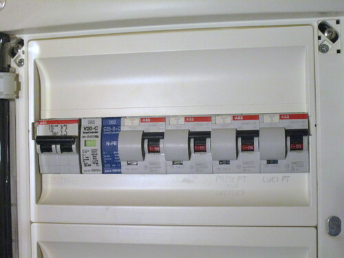 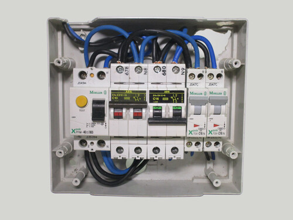 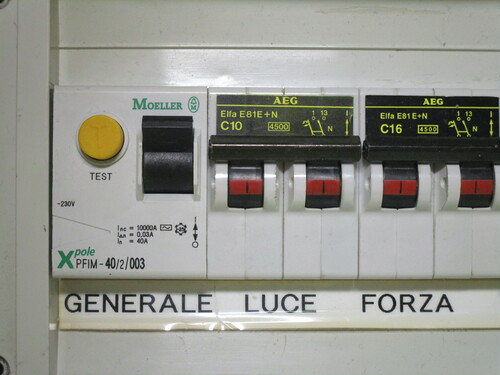{kind=link}
{kind=link}
{kind=link}
Electrical supplies
Electrical supplies in Italy tend to be single-phase, though three-phase is available as a paid option. The TT earthing system is the only type used.
The main issue with Italian supplies is with their low ratings: the most common one is 3kW, or about 14A at 230V. Once the limit is reached, the meter trips (specifically, a 3kW supply means 3.3kW continuously or 4kW for up to three hours). These low limits are a significant problem, as they prevent using more than one or two appliances at the same time.
Higher contracts are available, and are more common on new or recently renovated houses, but as they cost more per month most people either don't bother or only get the next tier up (typically 4.5kW). The main reason why this isn't a bigger problem is because so many houses have neutral gas supplies - but these low limits are a significant barrier to moving away from them.
Power meters
Italian power meters are quite unique, due to them having a built-in limiter breaker, with an electronic trip mechanism. This serves the purpose of a separate main fuse or breaker, common in other countries to protect the supply wires, as well as enforcing the aforementioned supply limits. It's also useful in order to isolate the entire supply to do electrical work.
The limiter breaker is only supposed to protect the supplier's wiring, and not the cable feeding the breaker box. For that purpose, a breaker is legally required if the cable is longer than 3 metres. However, this is rarely done; one possible reason could be the lack of a dedicated space for it inside the most popular type of meter enclosure.
 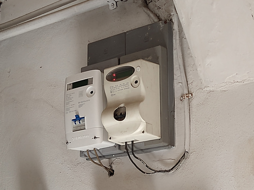
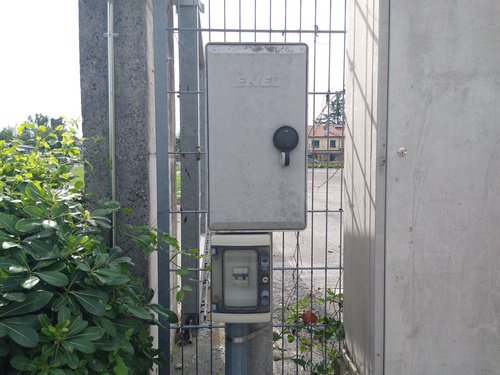
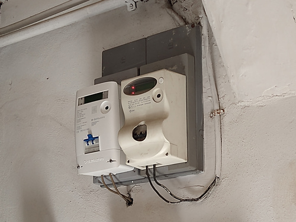
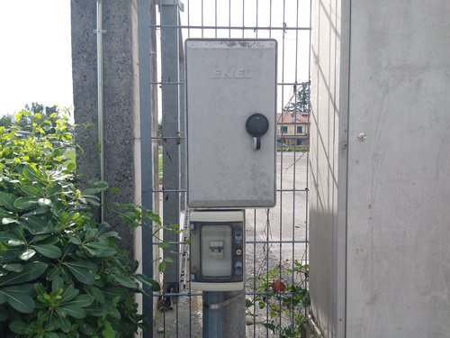
{kind=link}
{kind=link}